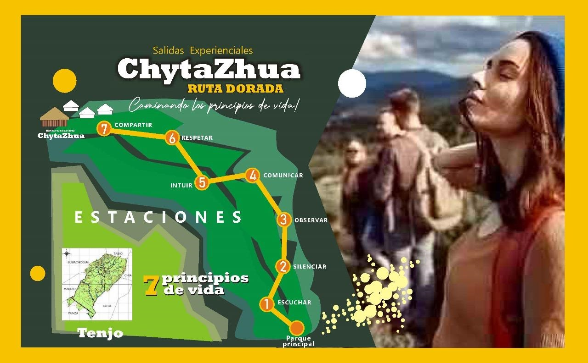

Lanzamos y vendemos experiencias turísticas que rescatan la cultura Muisca: caminatas interpretativas,
recorridos ecológicos y rutas patrimoniales en Tabio, Facatativá, Subachoque, Madrid y Boyacá. Salidas
diseñadas para grupos de mínimo 10 personas, con reserva y pago en línea seguros.
Descubre
Destinos destacados
Rutas y experiencias guiadas que conectan con la tradición Muisca y la naturaleza de la sabana y la
cordillera. Actividades interpretativas, historia, y caminatas ecológicas.
Experiencia ecológica y cultural: flora, fauna y relatos tradicionales Muiscas durante la caminata.
Experiencias destacadas
Nuestras experiencias Muiscas
Paquetes diseñados para grupos (mínimo 10 personas), con guías locales, transporte opcional, material
interpretativo y pago seguro en línea.
Ruta Verde Tabio - Día completo
Caminata guiada por la Ruta Verde Tabio, visita a miradores, taller breve sobre legado Muisca y
picnic con productos locales.
1 día
pax: mínimo 10
Tabio, Cundinamarca
(25 reseñas)
$120.000
/ por persona
Caminata arqueológica en Facatativá
Ruta con guía arqueólogo, explicaciones sobre sitios antiguos y experiencias culturales relacionadas
con la tradición Muisca.
1 día
pax: mínimo 10
Facatativá, Cundinamarca
(20 reseñas)
$110.000
/ por persona
Excursión cultural a Boyacá
Salida de día completo con rutas históricas, talleres culturales y degustación de productos
tradicionales.
1 día
pax: mínimo 10
Boyacá
(40 reseñas)
$150.000
/ por persona
Galería
Fotos de nuestras salidas
Imágenes reales de viajeros en las rutas Muiscas: paisajes, talleres culturales y momentos compartidos.

Reserva segura
Listo para vivir una experiencia Muisca inolvidable?
Reserva en línea con pago seguro. Nuestras salidas garantizan un mínimo de 10 personas para fortalecer
la experiencia grupal y la viabilidad de cada ruta.